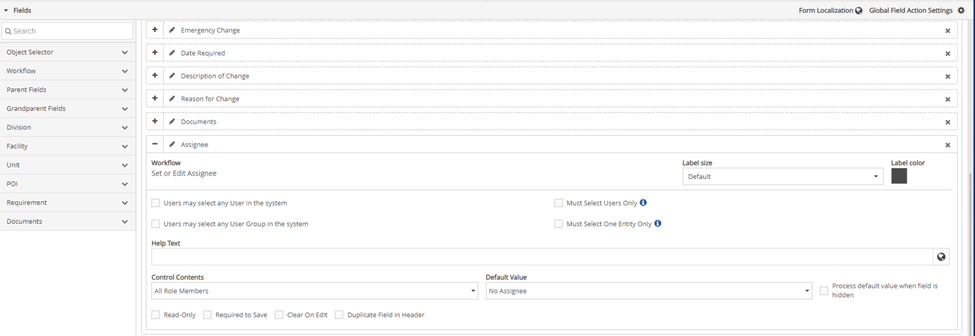
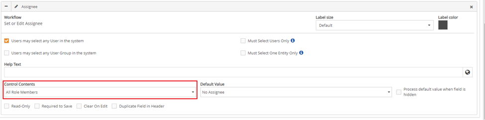
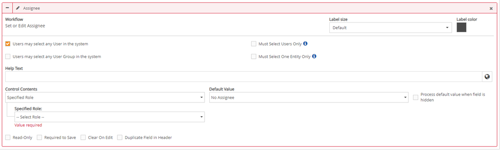
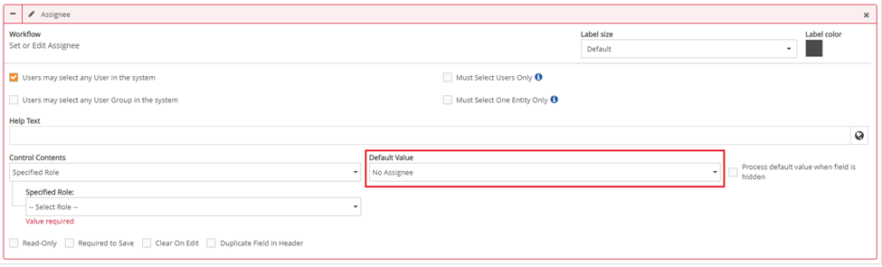
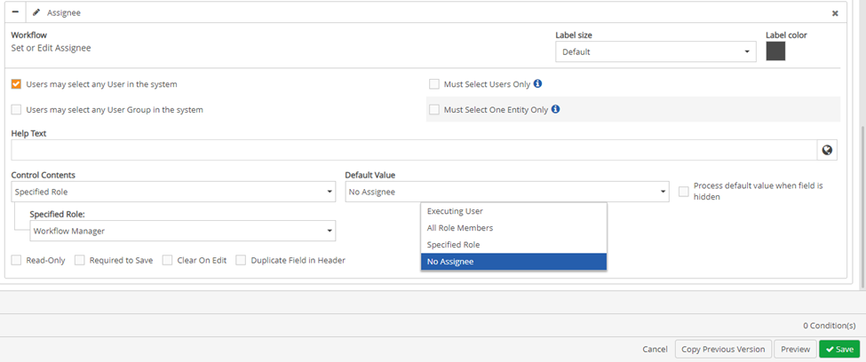

The Assignee field section expands.

- Users May Select Any User in the System, provides a user with a list of all users (not user groups) in the system to assign the child workflow to.
The user can assign the child workflow to as many users as they want to.
- Users May Select Any User Group in the System, provides a user with a list of all user groups and all users under each group in the system to assign the child workflow to.
The user can assign the child workflow to as many groups and users they want to.
- Must Select Users only, allows a user to only select users (not user groups) from the list populated to assign the child workflow to.
This option only works when either of the following are selected as well:
With Users May Select Any User in the System also selected, the user is provided with a list of all users (not user groups) in the system to assign the child workflow to.
With Users May Select Any User Group in the System also selected, the user is provided with a list of all user groups and all users under each group in the system. User groups are greyed out and disabled, while the list of users are enabled in each group for the user to select from.
- Must Select One Entity Only, allows a user to choose one entity whether it be a single user or user group.
This option only works when either of the following are selected as well.
With Users May Select Any User in the System also selected, the user sees a list of users. The user can only select one user to assign the child workflow to.
With Users May Select Any User Group in the System also selected, the user sees a list of groups, and when the + icon to the right of groups is clicked a list of users in that group appears. The user can only select one option in the assignee textbox, whether it is a user group or a user to assign the child workflow to.
The Control Content settings will determine which specific entities will display for the user to choose from in the Assignee textbox.
By default, this textbox will be filled in with All Role Members. All Role Members will be based on the workflow type step’s role resolved members for the particular instance and what was selected in the Control Behavior setting.

If Specified Role is selected. A Specified Role dropdown text box appears. You can select a specific role from this list. The selected workflow role’s resolved members for the particular instance and what was selected in the Control Behavior setting in the assignee dropdown menu for a user to select from when assigning a child workflow.

Default values determine whether there will be auto-populated entity/entities in the assignee textbox.
By default, this textbox will be filled in with No Assignee.

- Executing user, assigns the next step of the child workflow to the user who is completing the current stage of the child workflow.
All Role Members, this would include everyone who is associated to the workflow type. For example, the safety investigation members.
Specified Role, this would include users that hold a specific role.
No Assignee, there would be no assigned user, the Assignee section would be blank, and there would not be an edit button to the right of the Assignee textbox (which would exist in all other options).

![]()
When a user wants to edit the Assignee textbox, the Assignee textbox will be cleared when clicking Edit if this setting is enabled. When the user clicks the Assignee textbox, a list with two sections, the top section is titled as Current with users or user groups in bold, and below it is a list of users or user groups based on setting in the control behavior section.